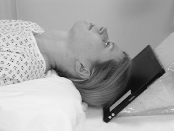

Zygomatic Arches(Inferior-Superior)
Centering point:The central ray should be perpendicular to the cassette and
long axis of the zygomatic arch.
A centring point should be located such that the central ray
passes through the space between the midpoint of the zygomatic
arch and the lateral border of the facial bones.
A centring point should be located such that the central ray
passes through the space between the midpoint of the zygomatic
arch and the lateral border of the facial bones.

Cassette Size:24cm x 30cm (12 x 10 ins)
Landscape
Exposure Factors:75kVp on
25mAs
FFD:100cm
Bucky/Grid:Moving or Stationary Grid
Filter:No
Collimation:Collimate to include area of interest
Pathologies:Fracture
Position of patient and cassette
- The patient lies supine, with one or two pillows under the
shoulders to allow the neck to be extended fully.
- An 18 x 24-cm cassette is placed against the vertex of the
skull, such that its long axis is parallel with the axial plane of
the body. It should be supported in this position with foam
pads and sandbags.
- The flexion of the neck is now adjusted to bring the long axis
of the zygomatic arch parallel to the cassette.
- The head in now tilted five to ten degrees away from the side
under examination. This allows the zygomatic arch under
examination to be projected on to the film without superimposition
of the skull vault or facial bones.